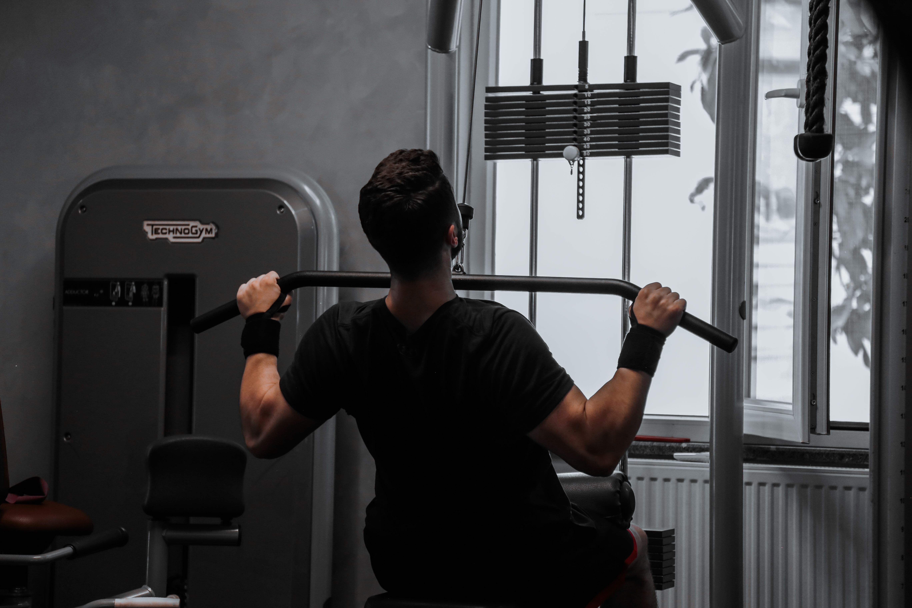

Pull Day Exercise Order
| Exercise | Primary Target | Personal Notes |
|---|---|---|
| 1. Lat Pulldowns | Lats (Back Width) | Pull elbows down toward the hips and avoid leaning too far back. |
| 2. Rows | Mid-Back (Thickness) | Focus on squeezing the shoulder blades together on every rep. |
| 3. Shrugs | Upper Traps | Pause briefly at the top of each rep instead of bouncing the weight. |
| 4. Preacher or Bicep Curls | Biceps (Short/Long Head) | Preacher curls lock the elbows in place to prevent momentum. |
| 5. Hammer or Rope Curls | Brachialis & Forearms | Neutral grip targets both the outer bicep and upper forearm. |
| 6. Wrist Curls | Forearm Flexors | Done seated with forearms resting flat on a bench or my knees. |
| 7. Reverse Wrist Curls | Forearm Extensors | Use lighter weight and higher reps to balance out wrist strength. |
Why I Train Forearms Directly
Back Width & Thickness
Pairing a vertical pull (lat pulldowns) with a horizontal pull (rows) hits the entire back evenly.
Complete Bicep Work
Doing one standard supinated curl and one neutral-grip hammer curl covers all parts of the upper arm.
Grip & Lower Arms
Many people skip direct forearm work, but finishing with wrist curls and reverse wrist curls makes a noticeable difference in grip strength.